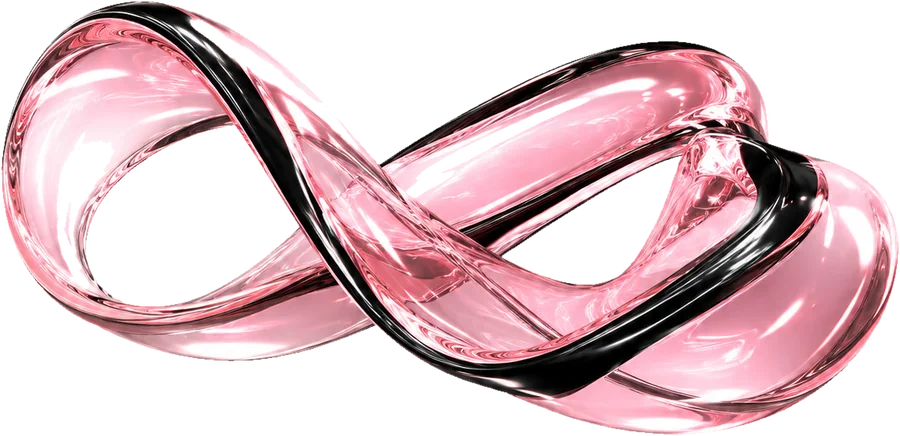

Соцмережі, реклама й сайти для вашого бізнесу
Вас мають помічати
Обговорімо проєкт→- SMM
- Таргет
- Сайти
- SEO
- Чат-боти
- Консультації
Послуги




Як ми працюємо
- 01
Знайомимось
Розбираємось у вашому бізнесі й задачі.
- 02
Знаходимо рішення
Визначаємо напрям і план роботи.
- 03
Створюємо
Готуємо й запускаємо все потрібне.
- 04
Покращуємо
Аналізуємо результат і вносимо зміни.
Подивіться,
що ми робимо
@sodo.agency→